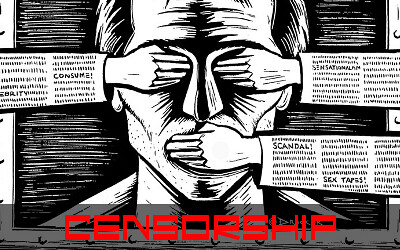

What is Censorship?

Censorship is the control, suppression, or restriction of information, ideas, artistic expression, or media content.
This control can come from governments, private companies, schools, parents, and tech platforms.
Why do things get censored?
- Protecting children
- Preventing Violence or hate speech
- Maintaining moral or cultural values
- National security
- Political Control
- Limiting Harm or false information
Forms of Censorship
- Removing books or topics from school libraries
- Banning certain movies or music
- Editing News Coverage
- Blocking websites
- Removing posts or accounts from social media
- Restricting TV, radio, or internet broadcasts
Is censorship always bad?
Not necessarily
Sometimes censorship helps protect people, especially kids.
But too much censorship can limit free speech, creativity, and access to information.
This tension is what makes censorship such a major global issue.